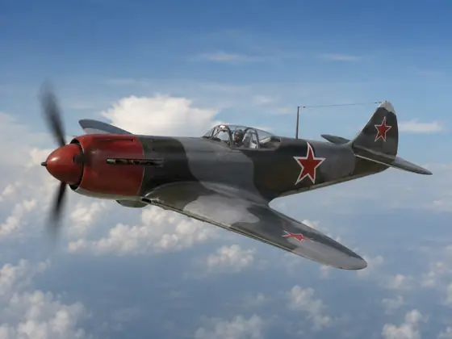

La-7 operations · 1944–1945
The La-7 was a cleaner, faster and more refined Lavochkin fighter than the La-7FN. It appeared during the Soviet advance west and became a prestige late-war VVS fighter, associated with Guards regiments and famous aces such as Ivan Kozhedub. A good La-7 build starts with the exact aircraft: standard two-cannon La-7, three-cannon route, Kozhedub subject, Bagration/East Prussia campaign aircraft, Berlin route or survivor/reference build.

Role & strengths
- Soviet late-war radial-engine fighter and La-7FN development
- Operation Bagration, East Prussia, Berlin, Guards regiment and ace-aircraft routes
- ASh-82FN radial cowling, cleaner airframe, two/three-cannon options and red star markings
- AMT-11/12 grey camouflage over AMT-7 blue, late-war tactical numbers and Guards markings
- Exhaust staining, oil streaks, dusty/muddy airfields, worn walkways and restrained panel fading
Key theatres
- Operation Bagration and Soviet advance route
- Guards regiment / Kozhedub aircraft route
- East Prussia and Berlin late-war routes
- Survivor and museum-reference routes
Specification La-7
Survivor/reference today

La-7 survivors and restorations are useful for cowling, canopy, cockpit, gun fit and landing gear, but verify wartime colours, tactical numbers and ace markings separately.
View referencesTimeline highlights
Build this La-7 as…
Pick aircraft and fit first. Standard two-cannon La-7, three-cannon La-7, Kozhedub aircraft, East Prussia/Berlin route and survivor builds need different details.
Aircraft identity
La-7s can be two-cannon or three-cannon aircraft. Check gun fit, cowling details and markings before committing.
Famous ace aircraft, especially Kozhedub routes, need exact tactical numbers, stars and presentation markings.
Paint scheme cards
Core La-7 route with red stars and late-war tactical numbers.
Famous-aircraft route where exact markings matter more than generic weathering.
Weather exhaust outlets, wing roots, tyres, belly and access panels separately.
Use survivors for detail only; check wartime photos for colours and markings.
Campaign cards
Late-war advance route with grey camouflage, dust and high sortie tempo.
Ace-aircraft route with exact markings and presentation aircraft checks.
Cold-weather late-war route with mud, exhaust and restrained airfield wear.
Final-campaign route with late-war grey finish and red star visibility.
Build difficulty and related guides
Medium. Clean lines and late-war finish make accuracy more important than heavy weathering.
Medium-high. Two/three cannon fit and cowling details must match the chosen aircraft.
Medium. Late-war La-7s benefit from restraint: exhaust, oil, mud and worn walkways.
Lavochkin La-7 VVS fighter regiments
Sortable La-7 cards covering Operation Bagration, Kozhedub/Guards, East Prussia, Berlin, late-war VVS and survivor/reference routes.
La-7 operating map
Airfield info
Click a marker to show linked La-7 unit cards and modelling notes.
Campaign timeline
Survivors
Books and reference sources
La-7 build guide
La-7 videos, photos and archive material
Media replaces the old separate walkaround tab: cockpit, exhaust, undercarriage, markings, survivor references, archive imagery and video cards are grouped here.